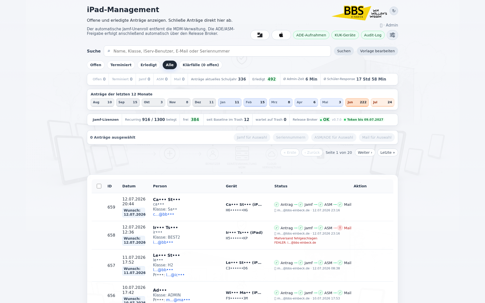
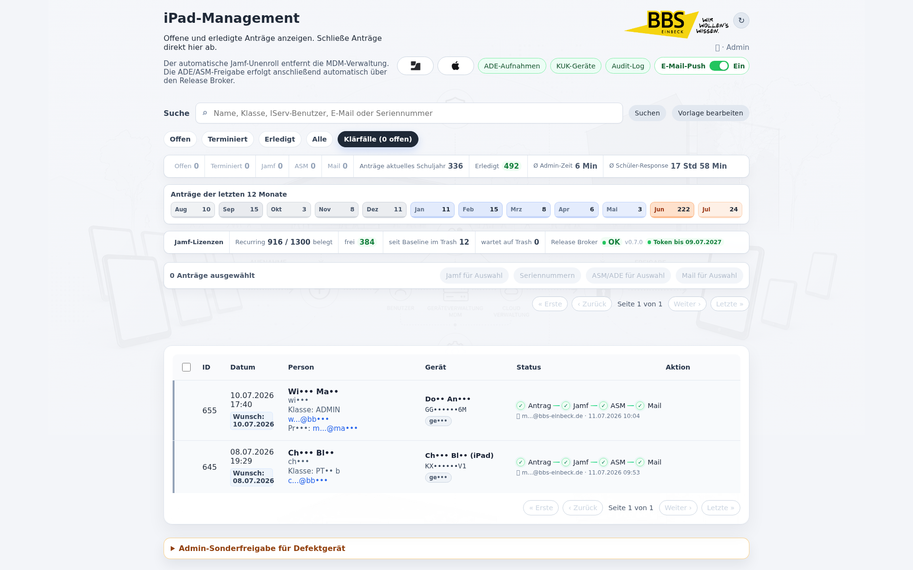
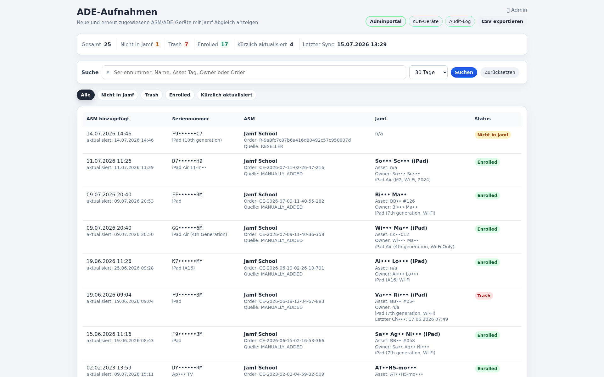
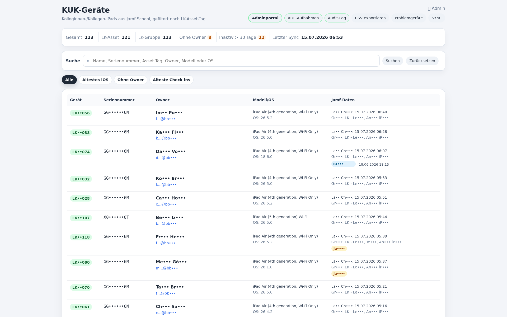
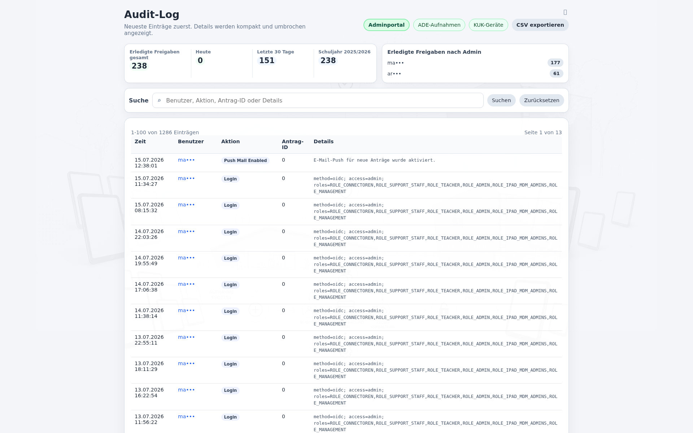
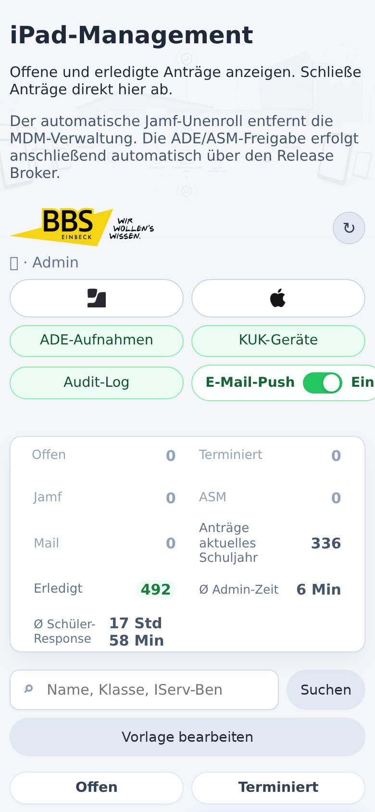
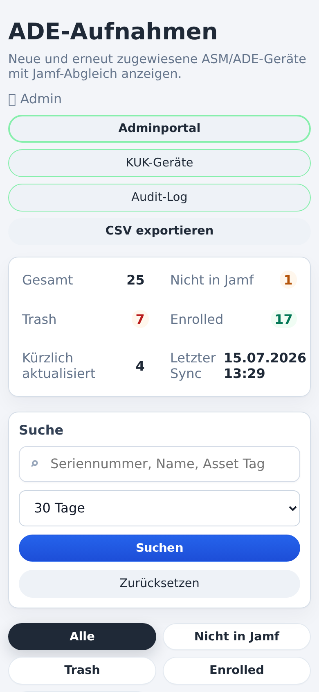
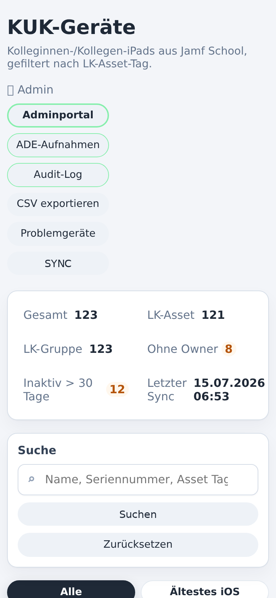

Was das System abbildet
DISOWN führt ehemals verwaltete iPads kontrolliert durch den operativen Freigabeprozess. Version 2.3 ergänzt eine schaltbare E-Mail-Push-Wache für neue Anträge, während Release Broker, Audit und Admin-Workflow unverändert nachvollziehbar bleiben. Das öffentliche Repository enthält neutralisierten Code, Beispiele, Screenshots und Installationshinweise ohne Produktivzugänge.
Admin-WorkflowAntrag, Jamf, ASM/ADE und Mail bleiben als klare Einzelschritte sichtbar.
Release BrokerEin einzelnes Gerät wird per ASM Public API dem Broker zugewiesen und per NanoDEP aus ADE/DEP freigegeben.
Admin-SonderfreigabeDefekte Geräte können nach Jamf-Seriennummernprüfung als lokaler Einzelfallantrag angelegt werden.
Bulk-VerarbeitungAuswahl, Seriennummernliste, ASM/ADE-Freigabe und Mail bleiben über den Ablauf erhalten.
AuditierbarkeitEin Audit-Log protokolliert kritische Schritte, Teilfehler und Bulk-Seriennummernlisten.
Schulgeräte-SchutzWebClip und Bulk bleiben gegen Leih- und Koffergeräte geschützt; der Sonderweg ist bewusst admin-only.
Ruhigere SucheSuchfelder aktualisieren verzögert, behalten den Fokus und bleiben weiterhin per Enter oder Button direkt bedienbar.
Standardablauf
01
WebClip-Antrag erfassen02
Jamf-Unenroll ausführen03
ASM/ADE über Release Broker freigeben04
Abschlussmail an vorhandene Adressen senden05
Workflow und Details im Audit-Log nachvollziehenScreenshots
{kind=link}

{kind=link}

{kind=link}

{kind=link}

{kind=link}

Mobile Screenshots
{kind=link}

{kind=link}

{kind=link}

Hinweis zur öffentlichen Version
Diese Seite beschreibt die neutrale Public-Version. Produktive Konfigurationen, Tokens, Schlüssel, Seriennummern, Personenbezüge und lokale Projekt-State-Dateien gehören nicht in dieses Repository.